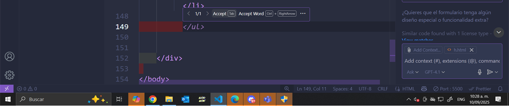

¿Qué es?
Es una herramienta de inteligencia artificial desarrollada por GitHub en colaboración con OpenAI. Funciona integrado en Visual Studio Code (y otros editores). Ayuda a los desarrolladores sugiriendo líneas de código o funciones completas basadas en el contexto.
¿Qué hace?
- Ahorra tiempo al escribir código repetitivo.
- Ayuda a aprender nuevas funciones o sintaxis que no conocías.
- Sirve como apoyo cuando estás atascado en un problema.
- Compatible con varios lenguajes de programación (C, Python, JavaScript, etc.).
- Genera código basado en comentarios o descripciones en lenguaje natural.
Ventajas:
- Ahorra tiempo y esfuerzo.
- Facilita el aprendizaje de nuevas sintaxis.
- Útil para superar bloqueos al programar.
Desventajas:
- No siempre es 100% correcto; requiere supervisión.
- Puede generar soluciones poco optimizadas.
Cómo usar GitHub Copilot
Abre VS Code y busca la extensión GitHub Copilot en el Marketplace. Instálala y luego inicia sesión con tu cuenta de GitHub para activar la herramienta.

Activar Copilot
Abre un archivo de código en tu lenguaje preferido y comienza a escribir. Copilot sugerirá líneas de código y funciones completas según tu contexto.
Revisar y aceptar sugerencias
Cuando Copilot sugiera código:
- Presiona "Tab" para aceptar la sugerencia.
- Usa "Ctrl + ]" o "Ctrl + [" para ver otras opciones.
- Si no quieres usar la sugerencia, simplemente sigue escribiendo.
Usar el chat
Copilot Chat permite:
- Abrir el panel de chat desde la barra lateral.
- Escribir preguntas o describir lo que necesitas.
- Recibir explicaciones o fragmentos de código en respuesta.